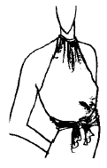
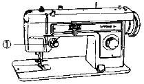

패션디자인산업기사 (2003-05-25 기출문제)
1과목: 피복재료학
1. 섬유의 종류가 다른 두가지 이상의 실을 섞어 짠 직물의 명칭은?
- 혼방직물
- 교직물
- 표백직물
- 가공직물
(정답률: 알수없음)

2. 곰팡이의 발생과 땀, 오염에 의한 악취의 발생을 방지하고 합성섬유의 흡습성을 증대시키는 가공을 무엇이라 하는가?
- 발수가공
- 위생가공
- 방충가공
- 대전방지가공
(정답률: 알수없음)
3. 내열성과 고탄성률의 섬유로서 특별한 용도의 피복이나 산업용 자재로 적당한 섬유는?
- 아라미드
- 사란
- 비니온
- 모다아크릴
(정답률: 알수없음)
4. 다음 중 서로 관계가 없는 것은?
- 면방적 원면 → 면사
- 원료 모 → 소모사(또는 방모사)
- 나일론 → 내일광성이 좋음
- 편직물 → 신축성이 좋음
(정답률: 알수없음)
5. 투습 방수포의 기능을 가진 신소재 직물로 사용되지 않는 것은?
- 스웨이드
- 고아 텍스
- 폴리우레탄 코팅포
- 초고밀도 직물
(정답률: 알수없음)
6. 다음 중 옳지 않은 것은?
- 방적공정에서 얻어진 한올의 실을 단사라고 한다.
- 몇개의 단사를 합친 것을 합사 또는 합연사라 한다.
- 단사로 만든 직물은 뻣뻣하다.
- 합연사로 만든 직물은 깔깔하다.
(정답률: 알수없음)
7. 다음 중에서 평직의 장점에 해당되는 것은?
- 조직점이 많아서 강하고 실용적이다.
- 광택이 좋고 표면의 결이 고운 직물을 만들수 있다.
- 실의 굴곡이 적고 유연하다.
- 직물의 표리(表裏)가 뚜렷하다.
(정답률: 알수없음)
8. 섬유의 권축이 관련되어 나타나는 성질이 아닌 것은?
- 방적성
- 대전성
- 보온성
- 통기성
(정답률: 알수없음)
9. 단백질 섬유의 기본 화합물은?
- 아미노산
- 글루코스
- 에틸렌
- 테레프탈산
(정답률: 알수없음)
10. 우유에서 얻어지는 재생 단백질 섬유는?
- 아라킨 섬유
- 카제인 섬유
- 제인 섬유
- 글리시닌 섬유
(정답률: 알수없음)
11. 양모의 축융현상은 모직물을 물세탁할 때 양모섬유를 엉기게 하여 직물이 수축되는 단점이 있다. 이를 방지하기 위하여 아래와 같은 방법을 이용하여 방향 마찰차의 효과를 감소시켜준다. 관계가 없는 것은?
- 머서라이즈
- 염소화합물 처리
- 기계적 처리
- 수지가공
(정답률: 알수없음)
12. 천연섬유의 역학적 성질이다. 강도의 상대적 비교치를 잘 나타낸 것은?
- 면＞아마＞견＞모시
- 아마＞면＞모시＞견
- 모시＞아마＞견＞면
- 모시＞면＞아마＞견
(정답률: 알수없음)
13. 섬유의 단면구조가 영향을 미치는 특성들이다. 관계가 없는 것은?
- 피복성
- 강도 및 신도
- 촉감 및 광택
- 보온성
(정답률: 알수없음)
14. 면섬유에 관한 설명이 아닌 것은?
- 내열성이 좋다.
- 레질리언스가 나빠서 구김이 잘 생긴다.
- 습윤강도가 약간 증가하므로 내세탁성이 좋다.
- 알칼리에 의해서 분해된다.
(정답률: 알수없음)
15. 양모를 묽은 황산에 침지하여 탄화시키는 목적은?
- 지방분 제거
- 땀성분 제거
- 식물성 잡물 제거
- 나쁜 털 제거
(정답률: 알수없음)
16. 실(絲)을 분류할 때 서로 성질이 다른 두 개의 섬유원료를 동시에 방사하여 한 개의 실로 뽑아내는 것은?
- 이형단면사
- 복합섬유사
- 혼방사
- 혼섬사
(정답률: 알수없음)
17. 다음 중 천연 필라멘트사에 속하는 것은?
- 마사
- 견사
- 레이온사
- 폴리프로필렌사
(정답률: 알수없음)
18. 이부자리 등에 사용되는 솜으로는 섬유의 종류에 따라 여러 가지로 분류할 수 있는데 이들 중 면솜과 화학솜(폴리에스테르,아크릴 등)을 서로 비교해보면 면솜이 대체로 우수하나 면솜이 화학솜에 비해 품질이 다소 떨어지는 것이 있는데 다음 중 어느 것인가?
- 겉보기 비중
- 레질리언스
- 흡습성
- 보온성
(정답률: 알수없음)
19. 생노방(raw silk fabric)이란 어떤 직물을 말하는가?
- 경사,위사에 생사,옥사 등을 사용한 견 평직물
- 경사,위사에 생사,옥사 등을 사용한 견 능직물
- 경사,위사에 생사,옥사 등을 사용한 견 주자직물
- 경사,위사에 생사,옥사 등을 사용한 견 변화능직물
(정답률: 알수없음)
20. 섬유제품에 습윤저항성을 부여하는 가공은?
- 방축가공
- 방미가공
- 발수가공
- 방오가공
(정답률: 알수없음)
2과목: 패션디자인론
21. 도식화에 대한 설명이 아닌 것은?
- 작업지시서에 사용되는 스케치이다.
- 자세한 디테일을 표현해야 한다.
- 의복 제작을 위한 기초설계를 보여준다.
- 체형과의 조화를 고려하여 아름답게 표현한다.
(정답률: 알수없음)
22. 도식화의 특징으로 가장 잘 맞는 것은?
- 제품 생산을 위한 작업 지시서에 많이 사용된다.
- 광고, 포스터 등 제품광고 홍보에 활용된다.
- 복식의 이미지 표현이 주목적이다.
- 의복을 완성해서 입은 상태를 보여주는 것으로 정확한 묘사가 중요하다.
(정답률: 알수없음)
23. 다음 복식의 기능에 대한 내용 중 성격이 다른 것은?
- 소방원이 단열 방염복을 입는 것
- 노동자가 공사장에서 헬멧을 쓰는 것
- 우주 비행사가 우주복을 입는 것
- 행사장 안내원이 유니폼을 입는 것
(정답률: 알수없음)
24. 복식의 조건으로 타당하지 않은 것은?
- 사회적 관계에서 미적 조건
- 착용자의 개성 및 TPO에 적합
- 높은 가격의 조건
- 인체 생리기능의 충족
(정답률: 알수없음)
25. 다음 중 유행에 대한 설명으로 옳은 것은?
- 패드(fad)란 현재 가장 많은 사람들이 채택한 유행 스타일이다.
- 클래식(classic)이란 과거에 크게 유행되었던 스타일을 가리키는 말이다.
- 매스패션(mass fashion)은 오랜 기간동안 꾸준히 지속되는 스타일을 말한다
- 하이패션(high fashion)은 앞으로 유행할 스타일로 유행선도 집단에 의해 수용된다.
(정답률: 알수없음)
26. 복식디자인의 4 요소가 아닌 것은?
- 선(line)
- 형태(form)
- 트리밍(trimming)
- 색채(color)
(정답률: 알수없음)
27. 다음 중 의복의 실루엣이 좁고 부드럽게 보이게 하는 것은?
- 저지
- 데님
- 사아지
- 포플린
(정답률: 알수없음)
28. 복식의 전체적인 윤곽선을 나타내는 것은?
- 디테일선
- 스타일
- 디자인
- 실루엣
(정답률: 알수없음)
29. 색상 코디네이션에 대한 설명 중 맞지 않는 것은?
- 검은 드레스에 붉은 장미를 다는 것은 액센트 칼라 코디네이션이다.
- 명도를 서서히 변화시켜 조합하는 것은 세퍼레이션 칼라 코디네이션이다.
- 푸른색, 청색, 짙은 곤색의 조합은 톤온톤 칼라 코디 네이션이다.
- 흑과 백의 조합은 명도 콘트라스트 코디네이션이다.
(정답률: 알수없음)
30. 색이 주위의 다른색의 영향을 받아 본래의 색과는 조금 다른색으로 보이는 현상을 무엇이라고 하는가?
- 색의 속성
- 색의 입체
- 색의 톤
- 색의 대비
(정답률: 알수없음)
31. 착시효과를 주는 요인으로 그 효과가 가장 적은 것은?
- 색
- 디테일
- 소재
- 문양
(정답률: 알수없음)
32. 리듬의 종류 중 균일한 리듬을 이용한 것은?
- 스펙트럼의 색채배열로 스커트를 입는다.
- pleats(플리츠)스커트를 입는다.
- 목과 소매 끝에 같은 색 트리밍을 댄다.
- 동물 무늬를 드레스의 가슴중심부위에 새긴다.
(정답률: 알수없음)
33. 복장의 리듬을 느끼게 하는 요소들 중 부적합한 것은?
- 러플
- 심지
- 트리밍
- 단추의 배열
(정답률: 알수없음)
34. 스타일화를 그리는 방법 중 잘못된 것은?
- 남성의 경우 어깨, 허리, 힙의 사이즈 차이를 줄인다.
- 몸통, 팔, 다리를 원통형으로 파악한다.
- 축이 되는 다리는 네크포인트로부터 내린 수직선에서 벗어난 곳에 위치한다.
- 여성의 경우 목을 더 가늘게, 어깨는 좁고 허리는 가늘게 그린다.
(정답률: 알수없음)
35. 색채 상징에 대한 설명으로 맞지 않는 것은?
- 각 색채별 의미는 시대나 문화권마다 차이가 있다.
- 시대와 문화가 다르더라도 색채의 상징에는 차이가 없다.
- 개인의 성, 연령, 역할, 문화적 배경 등에 따라 색채에 대한 기호가 다르다.
- 각 문화권마다 색채를 상징적인 표현수단으로 사용 하였다.
(정답률: 알수없음)
36. 상부와 하부는 풍성하고, 허리부분이 꼭끼는 형태의 실루엣은?
- 배럴 실루엣
- 스핀들 실루엣
- 아워글레스 실루엣
- 버블 라인
(정답률: 알수없음)
37. 뚱뚱한 체형인 사람이 선택할 디자인은?
- 몸매가 드러나지 않도록 아주 풍성한 스타일을 택한다.
- 몸매가 드러나도록 꼭끼는 스타일을 택한다.
- 모티브가 크고 드문드문있는 옷감을 사용한다.
- 모티브가 크지 않고 촘촘한 것을 택한다.
(정답률: 알수없음)
38. 비대칭 균형을 사용하기에 적합한 의복은?
- 아동복
- 평상복
- 이브닝드레스
- 남성복
(정답률: 알수없음)
39. 중심이 주변 전체를 통합하는 균형은?
- 수평적 대칭 균형
- 수평적 비대칭 균형
- 수직적 균형
- 방사적 균형
(정답률: 알수없음)
40. 의복에서 비대칭 균형의 특징은?
- 솔직함과 정적인 느낌을 동반한다.
- 분배의 공정성을 느낄 수 있다.
- 세련미와 성숙미가 있다.
- 평범하고 지루하다.
(정답률: 알수없음)
3과목: 의류상품학 및 복식문화사
41. 1850년대에 일어난 가장 큰 변화는 남자들의 코트와 바지를 다른 색과 옷감으로 만들어오던 것을 한가지 옷감으로 만들게 되었다. 1859년에 처음으로 바지, 코트, 조끼를 모두 동일색과 직물로 소개된 것은?
- 디토수트
- 프록코트
- 트라우저즈
- 까릭
(정답률: 알수없음)
42. 시장 포지셔닝(Market positioning) 전략의 활용가치가 아닌 것은?
- 자사브랜드를 어떤 시장세분화 영역에 설정할 것인가를 명확히 해준다.
- 실체성 있는 잠재시장을 발견할 수 있다.
- 경쟁브랜드와의 차별화를 위한 전략 수립에도 매우 유익하다.
- 어떤 영역의 브랜드가 유망할 것인가를 예측 자료로 서도 그 활용가치가 높다.
(정답률: 알수없음)
43. 고대 이집트(Egyptian)여자들이 주로 착용한 의상은?
- 트리앵귤러 에이플런
- 시스 스커트
- 유리어스
- 하이크
(정답률: 알수없음)
44. 로마네스크 시대에 서양의복이 입체적 구성으로 전환하게 된 요인이 아닌 것은?
- 북 유럽의 기후 조건이 몸에 꼭 맞는 의복 형태를 필요로 하였을 것이다.
- 게르만족들이 모피를 이어 몸에 대고 맞추어 꿰매 입는 과정에서 입체 구성 방법을 터득하였을 것이다.
- 십자군 전쟁의 결과로 군복이 발달하여 갑옷속에 꼭 맞는 의복을 입어야 하므로 의복이 입체 구성으로 전환 하였을 것이다.
- 기독교의 영향으로 신체를 가리는 의복으로 발전하였을 것이다.
(정답률: 알수없음)
45. 다음 중 이집트 복식의 설명으로 맞는 것은?
- 이집트인들은 모직물을 가장 즐겨 사용하였다.
- 칼라시리스는 여자복식의 일종이다.
- 이집트인들은 로인 클로스를 기본으로 입었다.
- 복식형태는 밀폐형이다.
(정답률: 알수없음)
46. 다음 중 시장조사의 목적이 아닌 것은?
- 고객의 욕구를 확인하는데 필요한 정보를 얻어 상품의 이용 가능성을 계획한다.
- 상품에 대한 필요한 지식을 얻는다.
- 물적 유통을 준비하여 전체 마케팅 활동을 촉진시키는데 필요한 정보를 획득한다.
- 전체시장을 세분화한 개개의 시장에 있어서 소비자의 수요에 제품을 적용시킨다.
(정답률: 알수없음)
47. 패션 산업의 발전 과정 중 현대적인 패션 산업의 정립기(1965~1969)의 특징은?
- 전반적으로 강렬한 모더니즘과 전위 미술의 추구와 이브생로랑(Yves Saint Laurent)이 전위 미술을 패션에 반영
- 대담하고 개성적인 뉴룩(New Look)의 발표
- 레이디스 패션(Ladies Fashion)의 탄생과 더불어 영맨 패션(Young man Fashion)의 구축
- 오뜨 꾸띄드란 고급의상점이나 의류 제조업자 들의 출현
(정답률: 알수없음)
48. 다음 중 리테일 머천다이저의 업무가 아닌 것은?
- 납품시기와 수량 결정
- 구매처 선정
- 판매가의 결정
- 메인 샘플 제작
(정답률: 알수없음)
49. 르네상스 복식에 나타난 특징적 장식기법은?
- 후드(hood)
- 슬래시(slash)
- 리리피프(liripipe)
- 카니온(canions)
(정답률: 알수없음)
50. 바로크 시대 복식의 특징을 설명한 것이 아닌 것은?
- 기묘하고 불규칙한 조형성
- 굽이치는 물결모양의 곡선
- 기하학적인 선의 조합
- 눈부시게 화려한 장식
(정답률: 알수없음)
51. 1980년대의 엘리트주의에 대한 반동으로 시작되었으며, 도시적인 보헤니아니즘을 표방하는 현실에 대한 냉소적이고 실용적인 가치관이 낳은 이 스타일은?
- 그런지 스타일
- 네오 히피 스타일
- 에스닉 스타일
- 에콜로지 스타일
(정답률: 알수없음)
52. 다음 중 비잔틴 복식의 특징을 설명한 것이 아닌 것은?
- 기독교적인 취향이 두드러진다.
- 동방의 색과 작품을 사용하였다.
- 인체미를 드러내어 과시하였다.
- 그레코 - 로만풍의 복식에 영향을 받았다.
(정답률: 알수없음)
53. 여성의 힙을 최대한으로 과장되게 부풀린 실루엣은 무엇인가?
- 엠파이어 스타일
- 로맨틱 스타일
- 크리놀린 스타일
- 버슬 스타일
(정답률: 알수없음)
54. 패션머천다이저의 자질로서 맞지 않는 것은?
- 세련된 감성
- 풍부한 상품지식
- 마케팅 능력
- 상사와 상의없이도 마케팅을 진행할 수 있는 능력
(정답률: 알수없음)
55. 다음중에서 기업의 입장에서 본 광고의 기능으로 적합하지 않는 것은?
- 시장 확대 기능
- 상품 제시 기능
- 판매원 교육 기능
- 신상품 도입 기능
(정답률: 알수없음)
56. 패션(fashion)산업의 특성이 아닌 것은?
- 패션산업은 지식집약 산업이다.
- 패션산업은 대기업 의존산업이다.
- 패션산업은 대기업 정보산업이다.
- 패션산업은 소비자지향 산업이다.
(정답률: 알수없음)
57. 다음중에서 매출액 증대를 위해 실시하는 판매촉진 계획이 아닌 것은?
- 패션쇼
- 이벤트
- 할인판매 작전
- 기업기여도 제시
(정답률: 알수없음)
58. 엠파이어 스타일의 특징은?
- 폭넓고 긴 스커트와 로우웨스트
- 폭넓고 긴 스커트와 하이웨스트
- 폭좁은 긴 스커트와 하이웨스트
- 폭좁은 긴 스커트와 로우웨스트
(정답률: 알수없음)
59. 다음 중 클래식에 대한 특징으로 맞지 않는 것은?
- 긴 수명주기
- 낮은 정점
- 사회전반에 확산
- 특이한 스타일
(정답률: 알수없음)
60. 마케팅의 역사적인 발전단계 중 1970년 이후 예기치 못한 환경변화와 불확실한 시대에 대응하기 위한 방법으로 대두된 개념은?
- 전략적 마케팅시대
- 마케팅 컨셉트시대
- 마케팅 정보시스템시대
- 세일즈 지향시대
(정답률: 알수없음)
4과목: 패턴공학 및 의복구성학
61. 다음중에서 간접적인 방법에 의해 인체를 계측하는 방법이 아닌 것은?
- 석고포대법
- 모아레법(Moire Topograph)
- 실루엣터법(Silhouetter)
- 활동계(Sliding Calliper)
(정답률: 알수없음)
62. 원단처리에 대한 설명 중 적절한 것은?
- 메리야스 원단은 일반 원단보다 흠이 적으므로 검단이 거의 필요없다
- 연단이란 마킹을 위하여 천을 겹침이 없게 펼치는 것이다.
- 감긴상태나 접힌 원단은 장력이 걸려 있으므로 풀면 약간 수축할수도 있다.
- 울(Wool)소재나 스판소재, 니트 등은 신축성이 있으므로 연단시 방치시간을 줄여야 한다
(정답률: 알수없음)
63. 노 칼라 네크라인의 안단 너비는 몇 ㎝정도로 하는가?
- 스쿼어 네크라인 안단은 3㎝
- 타원형 네크라인 안단은 3.5㎝
- V 네크라인 안단은 4㎝
- 라운더 네크라인 안단은 5㎝
(정답률: 알수없음)
64. 다음 스커트 중 다트를 접어 구성하는 스커트는 어느 것인가?
- straight skirt
- flared skirt
- gathered skirt
- tiered skirt
(정답률: 알수없음)
65. 포플린(poplin), 린넨(linen) 등 중간 두께 직물에 많이 사용하는 미싱바늘의 호수는?
- 11번
- 14번
- 16번
- 9번
(정답률: 알수없음)
66. 인체의 계측점 중에서 자를 뒷겨드랑이에 끼워 겨드랑이 밑에 표시한 점과 어깨 끝점과의 중간점은 어디인가?
- 옆목점
- 어깨끝점
- 앞품점
- 뒷품점
(정답률: 알수없음)
67. 시접의 분량이 가장 적게 들어가야할 곳은?
- 어깨선
- 밑단선
- 소매단선
- 목둘레선
(정답률: 알수없음)
68. 세탁을 자주해야 하는 운동복, 아동복, 와이셔츠에 많이 이용되는 솔기는?
- 가름솔
- 외줄솔
- 뉨솔
- 쌈솔
(정답률: 알수없음)
69. ASME 표준공정기호 중 Ｏ는 무엇인가?
- 운반
- 보관
- 검사
- 작업
(정답률: 알수없음)
70. 의복을 제작할 때 동작이 심한 부분은 시접을 늘여서 정리한다. 다리미로 옷감을 늘여서 정리하는 부분은?
- 뒤어깨 부분
- 소매산
- 스커트 허리부분
- 슬랙스 밑아래
(정답률: 알수없음)
71. 스트라이프 무늬 소재로 와이셔츠 칼라 블라우스에 대한 설명으로 틀린 것은?
- 칼라, 밴드, 요크는 2장 재단한다.
- 칼라, 밴드, 앞단, 커프스에 심지를 댄다.
- 요크의 중심선(곬선)은 식서방향이다.
- 커프스 겉에 장식 상침을 한다
(정답률: 알수없음)
72. 다음 그림과 같은 네크라인의 명칭은?

- 홀터 네크라인(halter neck line)
- 스퀘어 네크라인(square neck line)
- 하이 네크라인(high neck line)
- 라운드 네크라인(round neck line)
(정답률: 알수없음)
73. 공업용 재봉기의 용도에 따른 분류(중분류) 중 직선봉의 표시 기호는?
- E
- S
- T
- Z
(정답률: 알수없음)
74. 남 녀 체형의 비율에서 남자가 여자보다 현저히 높은 비율을 나타내는 부위는?
- 앞넓이
- 등넓이
- 엉덩이너비
- 어깨너비
(정답률: 알수없음)
75. 퍼커링에 관한 설명 중에서 틀린 것은?
- 구조적 퍼커링을 방지하기 위해서는 직물의 밀도를 줄일수도 있다.
- 세탁이나 습윤가공으로 인하여 형태가 불안정하여 퍼커링이 생기는 경우도 있다.
- 신축성 차이로 인한 퍼커링 발생시 신축성이 큰 천을 위로 오도록 해서 봉제한다.
- 시임을 플랫시임으로 바꾸어 바이어스 경사로 스티칭한다.
(정답률: 알수없음)
76. 그림의 재봉기에서 ①부분의 명칭은?

- 실 조절 장치
- 후진 바느질용 누름단추
- 땀수 조절 다이알
- 노루발 압력 조절기
(정답률: 알수없음)
77. 다음 중 의복 원형을 기능상 분류를 했을 때 기본 원형이 아닌 것은?
- 길(Bodice)
- 슬랙스(slacks)
- 소매(sleeve)
- 스커트(skirt)
(정답률: 알수없음)
78. 스트레치 소재의 봉제 시 심강도 및 신축성에 영향을 가장 많이 주는 요인은?
- 재봉바늘의 굵기
- 노루발 장력
- 봉사의 색상
- 스티치 종류
(정답률: 알수없음)
79. 의복원형 제도법 설명에서 틀린 것은?
- 장촌식은 계측이 서투른 초보자에게는 적합하지 않는 방법이다.
- 장촌식은 한, 두개의 기준 치수를 등분하여 제도하는 것이다.
- 단촌식은 계측항목이 많아 복잡하다.
- 단촌식은 초보자는 어려우나 몸에 잘 맞는 패턴을 만들 수가 있다.
(정답률: 알수없음)
80. 공정간의 이동거리가 멀고, 공정간에 작업량이 많거나 재고품이 많을 때, 생산기간이 길 때 등의 특징이 있으며 주로 다품종 소량 생산의 생산 시스템은?
- 스트레이트 라인 시스템(straight line system)
- 번들 시스템(Bundle system)
- 싱크로나이즈 라인 시스템(Synchronized line system)
- 블록 시스템(Block system)
(정답률: 알수없음)